En bref
Blizzard a annoncé plus de 600 nouvelles recettes, sans publier la liste complète. Cette fiche rassemble les 123 recettes de Cuisine relevées dans les fichiers du jeu (client 1.60.1.70862, consultés le 12 novembre 2026). Les noms et les compétences requises viennent des fichiers du jeu. L’obtention indiquée « inconnu » reste à confirmer. Les tableaux sont groupés par palier de compétence requise. Quand l’obtention, la source ou la zone n’est pas indiquée dans les données consultées, la cellule le dit clairement. Aucun taux de butin n’est repris, aucun n’était indiqué.[1][2][4]
Points clés
- 123 recettes de Cuisine listées ci-dessous, d’après les fichiers du jeu (client 1.60.1.70862, 12 novembre 2026) ; l’obtention « inconnu » reste à confirmer.[4] Données du jeu (client 1.60.1.70862)
- Obtention indiquée dans les fichiers du jeu : formateur 15, vendeur 2, butin 1, quête 22, inconnu 83.[4] Données du jeu (client 1.60.1.70862)
- Blizzard n’a pas publié la liste complète des recettes, ni les formateurs, vendeurs, prix ou taux de butin.[1][2]
- Composants de 119 recettes et 105 matériaux liés à leur fiche « où le trouver » (fichiers du jeu).[5] Données du jeu (client 1.60.1.70862)
Comment lire cette liste
Cette liste n’est pas officielle. Blizzard n’a pas publié le détail des recettes de ce métier (vendeurs, formateurs, monstres, zones, prix, taux de butin). Les noms et les compétences ci-dessous viennent des fichiers du jeu (client 1.60.1.70862). L’obtention « inconnu » reste à confirmer. Le nom français est celui de la localisation du jeu lorsqu’il a été trouvé ; à défaut, le nom anglais est utilisé dans les deux langues. « Formateur » couvre aussi les recettes indiquées comme apprises automatiquement avec le métier. Une page d’ensemble déjà en ligne, Recettes et plans avancés (/fr/metiers/recettes-et-plans-avances/), rappelle les règles officielles d’obtention et les recettes à butin déjà présentées par zone.[1][2][4]
- 123 recettes listées pour Cuisine.[4] Données du jeu (client 1.60.1.70862)
- Répartition dans les fichiers du jeu : formateur 15, vendeur 2, butin 1, quête 22, inconnu 83.[4] Données du jeu (client 1.60.1.70862)
- Zone renseignée pour 5 recette(s) ; non indiquée pour les autres.[4] Données du jeu (client 1.60.1.70862)
Compétence 1–75 — 33 recettes (données du jeu)
| Recette | Compétence requise | Obtention | Source | Zone | Statut |
|---|---|---|---|---|---|
| Feu de camp basique | 1 | formateur | appris automatiquement avec le métier | non indiqué | données du jeu |
| Feu de camp basique | 1 | formateur | maître de métier (non nommé) | non indiqué | données du jeu |
| Goujon brillant | 1 | inconnu | non indiqué | non indiqué | données du jeu — obtention à confirmer |
| Aile de chauve-souris croustillante | 1 | inconnu | non indiqué | non indiqué | données du jeu — obtention à confirmer |
| Biscuit au pain d'épices | 1 | inconnu | non indiqué | non indiqué | données du jeu — obtention à confirmer |
| Maquereau ombré | 1 | inconnu | non indiqué | non indiqué | données du jeu — obtention à confirmer |
| Kébab d'araignée kaldorei | 10 | quête | Recipe of the Kaldorei | non indiqué | données du jeu |
| Surprise du scorpide | 20 | inconnu | non indiqué | non indiqué | données du jeu — obtention à confirmer |
| Côtes de sanglier à la bière | 25 | quête | Côtes de sanglier à la bière | Dun Morogh (Alliance) | données du jeu |
| Thé de sérénité | 25 | inconnu | non indiqué | non indiqué | données du jeu — obtention à confirmer |
| Soufflé de Mur-Céleste | 25 | quête | Restocking the Larders | île de Zéphras | données du jeu |
| Délicieuses bouchées au raptor | 25 | inconnu | non indiqué | non indiqué | données du jeu — obtention à confirmer |
| Frappé venimeux | 25 | inconnu | non indiqué | non indiqué | données du jeu — obtention à confirmer |
| Viande de loup grillée | 35 | formateur | maître de métier (non nommé) | non indiqué | données du jeu |
| Lait de poule | 35 | inconnu | non indiqué | non indiqué | données du jeu — obtention à confirmer |
| Oeufs aux herbes | 35 | formateur | maître de métier (non nommé) | non indiqué | données du jeu |
| Bouchées à la chair de pinces | 35 | quête | Crab Season | non indiqué | données du jeu |
| Viande de sanglier rôtie | 35 | formateur | maître de métier (non nommé) | non indiqué | données du jeu |
| Viande de kodo rôtie | 35 | inconnu | non indiqué | non indiqué | données du jeu — obtention à confirmer |
| Viande d'ours fumée | 40 | inconnu | non indiqué | non indiqué | données du jeu — obtention à confirmer |
| Viande de loup épicée | 40 | formateur | maître de métier (non nommé) | non indiqué | données du jeu |
| Filet de furie | 50 | inconnu | non indiqué | non indiqué | données du jeu — obtention à confirmer |
| Tourte au foie de Broche-tripes | 50 | quête | Tourte au foie de Broche-tripes | non indiqué | données du jeu |
| Délice de furie du loch | 50 | inconnu | non indiqué | non indiqué | données du jeu — obtention à confirmer |
| Lutjan à longue mâchoire | 50 | inconnu | non indiqué | non indiqué | données du jeu — obtention à confirmer |
| Thon arc-en-ciel | 50 | inconnu | non indiqué | non indiqué | données du jeu — obtention à confirmer |
| Brouet de trotteur | 50 | quête | Easy Strider Living | non indiqué | données du jeu |
| Boudin | 60 | quête | Thelsamar Blood Sausages | non indiqué | données du jeu |
| Thé de chardon | 60 | inconnu | non indiqué | non indiqué | données du jeu — obtention à confirmer |
| Omelette de petit déjeuner | 75 | inconnu | non indiqué | non indiqué | données du jeu — obtention à confirmer |
| Biscuit en forme de bestiole | 75 | formateur | maître de métier (non nommé) | non indiqué | données du jeu |
| Émincé de raptor aux deux épices | 75 | quête | Changing Tastes | non indiqué | données du jeu |
| Ragoût de la marche de l'Ouest | 75 | quête | Ragoût de la marche de l'Ouest | non indiqué | données du jeu |
Compétence 76–150 — 32 recettes (données du jeu)
| Recette | Compétence requise | Obtention | Source | Zone | Statut |
|---|---|---|---|---|---|
| Palourdes bouillies | 80 | formateur | maître de métier (non nommé) | non indiqué | données du jeu |
| Steak de coyote | 80 | formateur | maître de métier (non nommé) | non indiqué | données du jeu |
| Steak de crocilisque | 80 | quête | Crocolisk Hunting | non indiqué | données du jeu |
| Sagerelle fumée | 80 | vendeur | Zerril Softbreeze | île de Zéphras | données du jeu |
| Pince de crabe farcie | 85 | inconnu | non indiqué | non indiqué | données du jeu — obtention à confirmer |
| Délice de déviant | 85 | inconnu | non indiqué | non indiqué | données du jeu — obtention à confirmer |
| Délice de fantaileron | 85 | inconnu | non indiqué | non indiqué | données du jeu — obtention à confirmer |
| Soupe de palourdes | 90 | inconnu | non indiqué | non indiqué | données du jeu — obtention à confirmer |
| Brouet de rat | 90 | quête | Brouet de rat | non indiqué | données du jeu |
| Feu de camp de compagnon | 90 | inconnu | non indiqué | non indiqué | données du jeu — obtention à confirmer |
| Soupe aux ailerons de murloc | 90 | quête | Selling Fish | non indiqué | données du jeu |
| Poisson-chat moustachu | 100 | inconnu | non indiqué | non indiqué | données du jeu — obtention à confirmer |
| Queue de lézard croquante | 100 | inconnu | non indiqué | non indiqué | données du jeu — obtention à confirmer |
| Goulash des Carmines | 100 | quête | Goulash des Carmines | non indiqué | données du jeu |
| Thé royal | 100 | inconnu | non indiqué | non indiqué | données du jeu — obtention à confirmer |
| Kébab de loup assaisonné | 100 | quête | Kébab de loup assaisonné | non indiqué | données du jeu |
| Frappé gélatineux | 100 | inconnu | non indiqué | non indiqué | données du jeu — obtention à confirmer |
| Beignet de crabe | 105 | formateur | maître de métier (non nommé) | non indiqué | données du jeu |
| Steak de grand ours | 110 | quête | The Rescue | non indiqué | données du jeu |
| Côtes de porc séchées | 110 | formateur | maître de métier (non nommé) | non indiqué | données du jeu |
| Tourte d'araignée fondante | 110 | quête | Gâteaux au crabe brun | non indiqué | données du jeu |
| Venaison dégraissée | 110 | inconnu | non indiqué | non indiqué | données du jeu — obtention à confirmer |
| Côtes de porc aux herbes | 110 | inconnu | non indiqué | non indiqué | données du jeu — obtention à confirmer |
| Gombo de crocilisque | 120 | quête | Apprentice's Duties | non indiqué | données du jeu |
| Côtelettes de lion épicées | 125 | quête | Elixir de douleur | non indiqué | données du jeu |
| Steak de loup | 125 | inconnu | non indiqué | non indiqué | données du jeu — obtention à confirmer |
| Frppl mrrggl | 125 | inconnu | non indiqué | non indiqué | données du jeu — obtention à confirmer |
| Thé aux racines | 125 | inconnu | non indiqué | non indiqué | données du jeu — obtention à confirmer |
| Omelette au goût étrange | 130 | quête | Ormer's Revenge | non indiqué | données du jeu |
| Festin de Macaron | 140 | butin | Cookie | The Deadmines | données du jeu |
| Ragoût épais de crocilisque | 150 | inconnu | non indiqué | non indiqué | données du jeu — obtention à confirmer |
| Délicieux steak de lion | 150 | quête | Costly Menace | non indiqué | données du jeu |
Compétence 151–225 — 34 recettes (données du jeu)
| Recette | Compétence requise | Obtention | Source | Zone | Statut |
|---|---|---|---|---|---|
| Palourdes gobelines | 155 | formateur | maître de métier (non nommé) | non indiqué | données du jeu |
| Poitrine d’ours | 175 | inconnu | non indiqué | non indiqué | données du jeu — obtention à confirmer |
| Tourte surprise | 175 | inconnu | non indiqué | non indiqué | données du jeu — obtention à confirmer |
| Ardeur de palourde géante | 175 | inconnu | non indiqué | non indiqué | données du jeu — obtention à confirmer |
| Œufs brouillés géants | 175 | inconnu | non indiqué | non indiqué | données du jeu — obtention à confirmer |
| Côtes de loup épicées | 175 | inconnu | non indiqué | non indiqué | données du jeu — obtention à confirmer |
| Ragoût de la jungle | 175 | inconnu | non indiqué | non indiqué | données du jeu — obtention à confirmer |
| Truite tête-mithril | 175 | inconnu | non indiqué | non indiqué | données du jeu — obtention à confirmer |
| Ragoût mystère | 175 | inconnu | non indiqué | non indiqué | données du jeu — obtention à confirmer |
| Rôti de raptor | 175 | inconnu | non indiqué | non indiqué | données du jeu — obtention à confirmer |
| Morue rochécaille | 175 | inconnu | non indiqué | non indiqué | données du jeu — obtention à confirmer |
| Délice de sagerelle | 175 | vendeur | Zerril Softbreeze | île de Zéphras | données du jeu |
| Bisque de tortue apaisante | 175 | quête | Bisque de tortue apaisante , Bisque de tortue apaisante | non indiqué | données du jeu |
| Frappé calcifié | 180 | inconnu | non indiqué | non indiqué | données du jeu — obtention à confirmer |
| Côtelettes de raptor bouillantes | 180 | inconnu | non indiqué | non indiqué | données du jeu — obtention à confirmer |
| Thé de triage | 180 | inconnu | non indiqué | non indiqué | données du jeu — obtention à confirmer |
| Bonne vieille viande de brochepâle | 185 | inconnu | non indiqué | non indiqué | données du jeu — obtention à confirmer |
| Ragoût de fruits de mer saumâtre | 200 | inconnu | non indiqué | non indiqué | données du jeu — obtention à confirmer |
| Chili de souffle de dragon | 200 | inconnu | non indiqué | non indiqué | données du jeu — obtention à confirmer |
| Feu de camp de spécialiste | 200 | inconnu | non indiqué | non indiqué | données du jeu — obtention à confirmer |
| Ragoût épais de kodo | 200 | inconnu | non indiqué | non indiqué | données du jeu — obtention à confirmer |
| Frappé épicé | 200 | inconnu | non indiqué | non indiqué | données du jeu — obtention à confirmer |
| Thé du soleil | 200 | inconnu | non indiqué | non indiqué | données du jeu — obtention à confirmer |
| Flétan épineux | 205 | formateur | maître de métier (non nommé) | non indiqué | données du jeu |
| Barracuda luisant cuit | 225 | inconnu | non indiqué | non indiqué | données du jeu — obtention à confirmer |
| Filet de rouget | 225 | inconnu | non indiqué | non indiqué | données du jeu — obtention à confirmer |
| Omelette monstrueuse | 225 | inconnu | non indiqué | non indiqué | données du jeu — obtention à confirmer |
| Poisson cuirassé | 225 | inconnu | non indiqué | non indiqué | données du jeu — obtention à confirmer |
| Paupiette de raptor | 225 | inconnu | non indiqué | non indiqué | données du jeu — obtention à confirmer |
| Mini-burgers de cerf savoureux | 225 | inconnu | non indiqué | non indiqué | données du jeu — obtention à confirmer |
| Chili de crabe épicé | 225 | inconnu | non indiqué | non indiqué | données du jeu — obtention à confirmer |
| Jaune-queue tacheté | 225 | inconnu | non indiqué | non indiqué | données du jeu — obtention à confirmer |
| Steak de loup tendre | 225 | inconnu | non indiqué | non indiqué | données du jeu — obtention à confirmer |
| Soupe de palourdes d'Undermine | 225 | inconnu | non indiqué | non indiqué | données du jeu — obtention à confirmer |
Compétence 226–300 — 24 recettes (données du jeu)
| Recette | Compétence requise | Obtention | Source | Zone | Statut |
|---|---|---|---|---|---|
| Saucisse d'araignée | 230 | formateur | maître de métier (non nommé) | non indiqué | données du jeu |
| Calmar grillé | 240 | inconnu | non indiqué | non indiqué | données du jeu — obtention à confirmer |
| Perche fumée | 240 | inconnu | non indiqué | non indiqué | données du jeu — obtention à confirmer |
| Soupe de lutjan nagenuit | 250 | inconnu | non indiqué | non indiqué | données du jeu — obtention à confirmer |
| Saumon solécaille poché | 250 | inconnu | non indiqué | non indiqué | données du jeu — obtention à confirmer |
| Thé des sages | 250 | inconnu | non indiqué | non indiqué | données du jeu — obtention à confirmer |
| Frappé pernicieux | 250 | inconnu | non indiqué | non indiqué | données du jeu — obtention à confirmer |
| Pain de saumon | 275 | inconnu | non indiqué | non indiqué | données du jeu — obtention à confirmer |
| Hachis de chauve-souris | 275 | inconnu | non indiqué | non indiqué | données du jeu — obtention à confirmer |
| Bruscitt d’ours | 275 | inconnu | non indiqué | non indiqué | données du jeu — obtention à confirmer |
| Linguines aux palourdes | 275 | inconnu | non indiqué | non indiqué | données du jeu — obtention à confirmer |
| Flanchet au poivre | 275 | inconnu | non indiqué | non indiqué | données du jeu — obtention à confirmer |
| Ragoût de homard | 275 | inconnu | non indiqué | non indiqué | données du jeu — obtention à confirmer |
| Steak de barracuda | 275 | inconnu | non indiqué | non indiqué | données du jeu — obtention à confirmer |
| Effiloché de raptor préhistorique | 275 | inconnu | non indiqué | non indiqué | données du jeu — obtention à confirmer |
| Courante-surprise | 275 | inconnu | non indiqué | non indiqué | données du jeu — obtention à confirmer |
| Ragoût de tortue savoureux | 275 | inconnu | non indiqué | non indiqué | données du jeu — obtention à confirmer |
| Pamplona d’envergure | 275 | inconnu | non indiqué | non indiqué | données du jeu — obtention à confirmer |
| Steak de cerf fumant | 275 | inconnu | non indiqué | non indiqué | données du jeu — obtention à confirmer |
| Confiture patte-douce | 275 | inconnu | non indiqué | non indiqué | données du jeu — obtention à confirmer |
| Steak de frappe rapide | 275 | inconnu | non indiqué | non indiqué | données du jeu — obtention à confirmer |
| Pyro-côtelettes de chimaerok à la Dirge | 300 | quête | Pyro-côtelettes de chimaerok à la Dirge | non indiqué | données du jeu |
| Four en fer | 300 | inconnu | non indiqué | non indiqué | données du jeu — obtention à confirmer |
| Boulettes fumées du désert | 300 | formateur | maître de métier (non nommé) | non indiqué | données du jeu |
Matériaux : où les trouver
Les 105 matériaux demandés par les 119 recettes de cette page, rangés par famille, avec le nombre de recettes qui les utilisent. Chaque matériau mène à sa fiche « où le trouver » ; le tableau repliable donne les composants de chaque recette. Composants lus dans les fichiers du jeu (client 1.60.1.70862). Toutes les familles : Matériaux : où les trouver.[5] Données du jeu (client 1.60.1.70862)
Herbes — 7
Cuirs, peaux et écailles — 1
Viandes et ingrédients de cuisine — 70
 Chair de raptor5
Chair de raptor5 Petit oeuf5
Petit oeuf5 Farine simple4
Farine simple4 Viande mystère4
Viande mystère4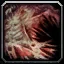
Viande de cerf3 Viande de grand ours3
Viande de grand ours3 Aile de chauve-souris charnue2
Aile de chauve-souris charnue2 Aileron de murloc2
Aileron de murloc2 Chair de palourde2
Chair de palourde2- Chair de palourde piquante2
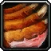
Côtes de sanglier2 Ichor d'araignée2
Ichor d'araignée2- Morceau de viande de sanglier2
 Oeil de murloc2
Oeil de murloc2 Oeuf de raptor2
Oeuf de raptor2- Oeuf géant2
 Pince de clampant2
Pince de clampant2- Steak de loup2
 Viande d'ours2
Viande d'ours2- Viande de crabe tendre2
- Viande de crocilisque tendre2
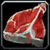
Viande de kodo épaisse2- Viande de lion2
- Viande de loup maigre2
- Viande de loup rouge2
- Viande de tigre2
- Viande de tortue2
- Aile de busard1
 Barracuda luisant cru1
Barracuda luisant cru1 Chair croustillante d'araignée1
Chair croustillante d'araignée1- Chair de clampant1
- Chair de palourde géante1
- Chair de palourde relevée1
- Chair de ver des sables1
 Chair tendre de Furie1
Chair tendre de Furie1- Côtes de sanglier des rochers1
 Dard de scorpide1
Dard de scorpide1- Filet de chimaerok1
 Flétan épineux cru1
Flétan épineux cru1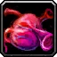
Foie de Broche-tripes1 Furie du loch crue1
Furie du loch crue1 Goujon brillant cru1
Goujon brillant cru1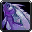
Grande sagerelle crue1 Groin de Broche-tripes1
Groin de Broche-tripes1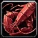
Homard Pince-noire1 Jaune-queue tacheté cru1
Jaune-queue tacheté cru1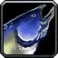
Lutjan nagenuit cru1 Lutjan à longue mâchoire cru1
Lutjan à longue mâchoire cru1 Maquereau ombré cru1
Maquereau ombré cru1- Morue rochécaille crue1
- Patte d'araignée fondante1
- Perche estivale crue1
- Petite patte d'araignée1
 Poisson-chat moustachu cru1
Poisson-chat moustachu cru1 Queue de lézard-tonnerre1
Queue de lézard-tonnerre1 Rouget cru1
Rouget cru1 Sagerelle crue1
Sagerelle crue1- Saumon Blanchécaille cru1
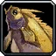
Saumon solécaille cru1 Thon arc-en-ciel cru1
Thon arc-en-ciel cru1 Tripes de sanglier1
Tripes de sanglier1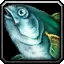
Truite tête-mithril crue1- Viande d'araignée blanche1
 Viande de condor coriace1
Viande de condor coriace1- Viande de coyote1
- Viande de crocilisque1
- Viande de kodo1
- Viande de loup tendre1
- Viande de trotteur1
- Viande filandreuse de vautour1
Pièces d’ingénierie — 1
Fils, fioles, teintures et autres composants — 8
 Epices fortes28
Epices fortes28 Epices apaisantes27
Epices apaisantes27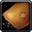
Epices douces24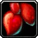
Petit sac de flammes2- Fantaileron1
 Grand croc1
Grand croc1 Petite glande à venin1
Petite glande à venin1 Serre cruelle1
Serre cruelle1
Objets utilisés comme composants — 18
 Eau de source9
Eau de source9 Lait glacé5
Lait glacé5 Epices spéciales2
Epices spéciales2 Jus de baie lunaire2
Jus de baie lunaire2 Jus de melon2
Jus de melon2 Nectar sucré2
Nectar sucré2 Pomme rouge brillante2
Pomme rouge brillante2 Soupe de rosée matinale2
Soupe de rosée matinale2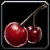
Baies d’Hyjal1 Bière au malt Rhapsody1
Bière au malt Rhapsody1 Calmar hivernal cru1
Calmar hivernal cru1 Eau de vie spéciale1
Eau de vie spéciale1 Grand barracuda cru1
Grand barracuda cru1 Outre de bière naine1
Outre de bière naine1- Poisson cuirassé cru1
 Poisson déviant1
Poisson déviant1 Racine de Courante1
Racine de Courante1- Rat fouisseur1
Composants de chaque recette · 119 recettes
Historique des corrections
- 12 novembre 2026 (brouillon, non validé) : première liste complète des recettes de ce métier, d’après des données extraites du client, avec mention « à confirmer ». Aucune publication.[4][1]
- 13 novembre 2026 : « à confirmer » retiré des faits trouvés dans les fichiers du jeu (client 1.60.1.70862), décision t359u. L’obtention « inconnu », les zones non indiquées, les sources sans tampon de build et les valeurs seulement déduites restent à confirmer. Ce n’est pas une confirmation officielle de Blizzard, ni une mise en ligne.[4] Données du jeu (client 1.60.1.70862)
- 14 novembre 2026 : liens internes vers les fiches déjà publiées (bestiaires, listes de recettes, donjons) — lot v40, t361u. Aucun fait nouveau.[1][2][3][4]
- 17 novembre 2026 (v42) : ajout de la section « Matériaux : où les trouver » (composants de chaque recette, lus dans les fichiers du jeu, client 1.60.1.70862).[5] Données du jeu (client 1.60.1.70862)
Ce qui est confirmé / ce qui reste à confirmer
Confirmé par les sources officielles
Reste à confirmer
- Liste officielle complète des recettes, matériaux, prix et formateurs nommés : non publiée par Blizzard.
- Pour une partie des recettes, l’obtention, la source ou la zone n’était pas indiquée dans les données consultées ; ces cellules restent à « non indiqué ».
- Taux de butin : non indiqués dans les données consultées, et non publiés officiellement.
Dates clés
Sources
- [1] Récapitulatif de la présentation « Au cœur de World of Warcraft: Forever » (FR) · publié le · consulté le
World of Warcraft: Forever Deep Dive Panel Recap (EN) · publié le · consulté le - [2] Retrouvez-vous autour d’un feu de camp dans World of Warcraft: Forever (FR) · publié le · consulté le
Gather Around the Campfire in World of Warcraft: Forever (EN) · publié le · consulté le - [3] WoW: Forever Hotfixes - November 11, 2026 (EN) · publié le · consulté le
- [4] Guide Cuisine — liste des recettes (données du jeu (client 1.60.1.70862) (FR) · date de publication non indiquée · consulté le
Cooking profession guide — full recipe list (game data (client 1.60.1.70862) (EN) · date de publication non indiquée · consulté le Données du jeu — client 1.60.1.70862 - [5] WoW Forever client files, build 1.60.1.70862 — data tables and icons read from Blizzard’s official CDN (EN) · date de publication non indiquée · consulté le Données du jeu — client 1.60.1.70862
Sources officielles Blizzard Entertainment (droits réservés). Ce wiki en propose une synthèse originale ; seules de courtes citations sont reproduites. Les informations annoncées peuvent évoluer avant ou après le lancement. Les sources marquées « données du jeu » viennent des fichiers du client WoW Forever (build 1.60.1.70862). Ce n’est pas une confirmation officielle de Blizzard.
Version documentaire : World of Warcraft: Forever — annonces officielles et fichiers du jeu (client 1.60.1.70862), état documentaire 2026-11-17 · révision 17